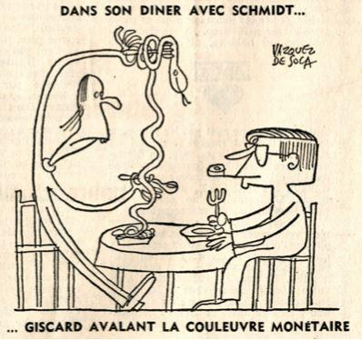
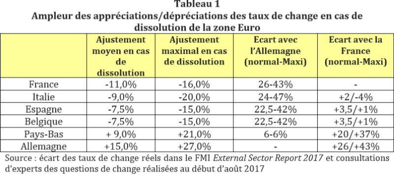
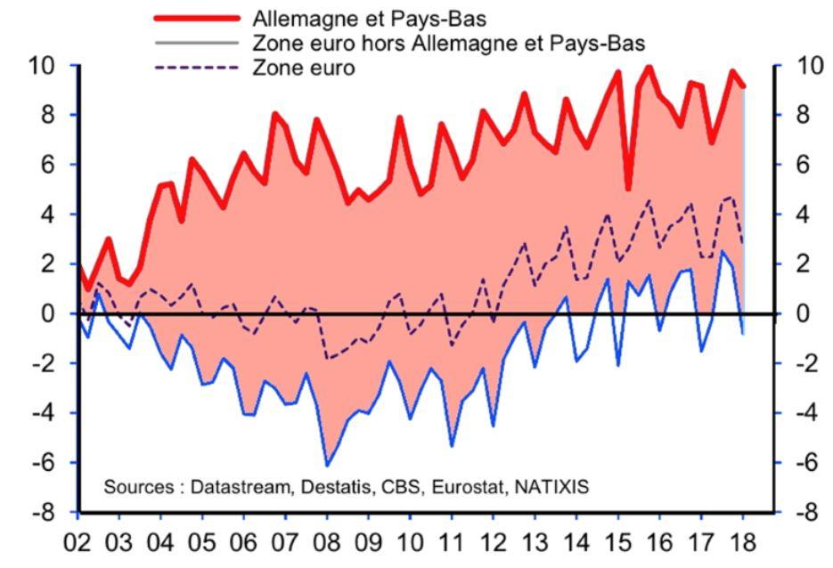

La publication le 5 septembre d’une note du service de recherche de la Banque NATIXIS a relancé le débat sur la zone Euro. Cette étude de NATIXIS parle explicitement de l’échec de la zone Euro1. Dans cette étude, les auteurs constatent que la mobilité des capitaux entre les pays de la zone euro a disparu depuis la crise de la zone euro de 2010-2013 et que les échanges commerciaux entre les pays de la zone euro n'ont pas profité autant que ce qu'on pourrait attendre de l'intégration monétaire et économique. Si le second point était largement prévisible depuis la critique des travaux d’Andrew K. Rose, le premier vaut en fait condamnation pour la zone Euro. Nous sommes bien en présence d’un échec profond, un échec dont les conséquences sont désastreuses pour les pays de la zone Euro2, mais ils ne limitent pas justement à ces pays3.
LES MENSONGES DE LA NAISSANCE DE L’EURO
L’Euro fut d’abord présenté comme une « garantie » contre les spéculations monétaires qui avaient marqué la période du Système Monétaire Européen, du « serpent monétaire » et de l’ECU4. Le SME fut précédé du « Serpent monétaire européen », lui-même résultant du « rapport Werner » remis en 19705.
On le voit, les tentatives de constitution d’une zone monétaire européenne sont anciennes. Le rapport Werner fut rendu caduque par la décision des États-Unis de mettre fin à la convertibilité automatique du dollar en or au taux de 35 dollars l’once.
Institué par l’accord de Bâle du 10 avril 1972, le « serpent » constitua alors la réponse des pays européens.
Il est vrai qu’une monnaie commune (autrement dit, une monnaie existant en plus des monnaies nationales et utilisée pour certaines transactions) comme ce que l’on cherchait à mettre en place avec le SME et avec l’ECU exige des règles strictes limitant les mouvements de capitaux afin de ne pas laisser de place à une spéculation à l’intérieur de la zone. Or c’est bien là que le bât blesse.
En fait, les pays européens ont fait le choix d’une libéralisation financière totale. Ce choix, qui a été largement inspiré par les socialistes français6, a conduit, nous allons le voir, à évincer la solution de la monnaie commune au profit de celle, en principe plus élégante mais au combien plus dangereuse, de la monnaie unique. La réponse à cette première question se trouve donc dans les crises que le Système monétaire européen (SME) a connues. Mais l’histoire de ces crises a été réécrite par les partisans de la monnaie unique comme celle d’une impossibilité de combattre la spéculation dans un cadre à plusieurs monnaies. La question des institutions susceptibles de limiter et de contrôler les mouvements de capitaux ne fut jamais abordée et la « libération » des capitaux a été présentée comme un dogme, ce qu’elle n’était certainement pas7. Pourtant, le contrôle des capitaux a fonctionné face à des crises importantes8. En particulier, on a systématiquement omis de préciser où de rappeler que les pays qui étaient parties prenantes du SME avaient tout fait pour laisser le champ libre à la spéculation. Le biais contre les contrôles de capitaux apparaît comme essentiellement idéologique9.
LES MENSONGES SUR LA CROISSANCE
Il faut ici rappeler qu’après avoir déguisé l’Euro en une forme de garantie contre les mouvements spéculatifs et les fluctuations, les thuriféraires de l’Euro ont présenté ce dernier comme un avantage pour la croissance en Europe. Les travaux qui furent présentés dans les années 1990 insistaient tous sur les avantages extraordinaires que donnerait la monnaie unique aux pays qui l’utiliseraient. Il s’agissait, bien entendu, de travaux économétriques10. Pourtant, les résultats en furent rapidement contestés11. Il est vrai que ces travaux étaient construits sur des bases tant méthodologiques12 que théoriques13 extrêmement fragiles. Il est maintenant acquis que les effets de l’Euro sur le commerce interne des pays de l’UEM a été des plus réduit14. L’étude publiée par NATIXIS enfonce donc le dernier clou dans le cercueil de cette idée.
De nombreux politiciens ont ainsi prétendu que l’introduction de l’Euro provoquerait, par son seul effet, une hausse de la croissance des pays membres d’environ 1%. Il n’en fut rien15. En réalité, l’Euro a bien eu un effet sur le commerce intra-zone, mais cet effet a été essentiellement de réarranger les flux entre les pays et de conduire certains pays à se désindustrialiser tandis que d’autres (essentiellement l’Allemagne) profitaient très fortement de l’introduction de l’Euro16. Tout ceci conduit à mettre en doute la rationalité économique de l’introduction de la monnaie unique. Elle a plutôt joué un rôle d’exacerbation des différences entre les pays membres, ce qui n’est pas surprenant si l’on y réfléchit un peu car les variations de taux de change entre les pays avaient fondamentalement (une fois la composante spéculative de court terme retirée) pour effet de compenser ces différences17.
L’EXPLOSION DES ÉCARTS DE COMPÉTITIVITÉ
Les causes de cette situation sont connues. Elles furent analysées dans une étude publiée en 2017. Dans l’édition 2017 du External Sector Report 18, le Fond Monétaire International a souligné l’ampleur du problème posé par la divergence des compétitivités dans le cadre de la zone Euro. Il a montré l’importance de ces problèmes pour des pays comme la France, mais aussi l’Italie et l’Espagne. On voit que le problème s’est même aggravé par rapport à l’édition 2016. Ces écarts de taux de change virtuel au sein de la zone Euro sont d’ailleurs régulièrement calculés par le FMI.
L’absence de circulation des capitaux au sein de la zone Euro, qui est bien indiqué dans l’étude de NATIXIS, rend d’autant plus dramatique cet éclatement de la compétitivité au sein de l’Euro, qui conduit à une sous-évaluation de la monnaie de l’Allemagne et à une surévaluation de la monnaie de la France, de l’Italie, de l’Espagne et de la Belgique.
Ceci explique alors une large partie de l’excédent commercial allemand.

UNE RÉFORME DE LA ZONE EURO EST-ELLE POSSIBLE ?
Alors, on dira que tout ceci survient alors que la « zone Euro » est restée fondamentalement incomplète : il n’y a pas eu de budget commun (du moins dans les proportions nécessaires) et pas d’union fiscale ni d’union de transferts. Mais, cette incapacité à réaliser ce que certains (et parfois honnêtement) tenaient pour le « programme global » de l’Euro est le produit de la résistance institutionnelles de plusieurs pays, et au premier lieu de l’Allemagne. Pour cette dernière, il n’a jamais été question d’avoir un budget fédéral et la seule forme de « fédéralisme » qui soit acceptable serait le contrôle par l’Allemagne des budgets des autres pays. Ce pays a toujours refusé de la manière la plus catégorique d’accéder aux diverses demandes d’une « union de transferts », demandes qui pourtant seraient logiques dans la perspective d’une Union européenne de type fédérale. De fait, l’Allemagne s’est servie de l’UE pour faire avancer ses propres intérêts nationaux au détriment des autres pays19.
L’inachèvement de la « zone Euro » n’est donc pas conjoncturel comme on le prétend mais bien structurel. L’Allemagne a voulu cette situation parce que c’est la seul qui lui convenait. Dès lors, le futur de l’Union Économique et Monétaire apparaît des plus sombres. Cette « union » devrait connaître ce qui fut le sort des autres « unions », c’est à dire se dissoudre20. Mais, ce faisant, elle risque fort d’entraîner avec elle la dissolution de l’Union européenne elle-même.
L’échec de la zone Euro est aujourd’hui évident pour la grande majorité des observateurs. Cet échec entraîne les pays de la zone Euro à leur perte mais, au-delà, pèse de manière importante sur la conjoncture internationale. Le fait que l’Euro condamne un groupe de pays à avoir une faible croissance a des conséquences importantes sur le reste du monde. C’est pourquoi, la dissolution de la zone Euro apparaît aujourd’hui comme une priorité absolue.
J.S.
Notes :
1 Natixis, Flash Economie, Pour l’instant la zone Euro est un échec, n°955, 5 septembre 2018.
2 Mastromatteo, G. et S. Rossi (2015). The economics of deflation in the euro area: a critique of fiscal austerity, in Review of Keynesian Economics, vol. 3, n° 3, pp. 336–350.
3 Bibow J. et A. Terzi (dir.), Euroland and the World Economy: Global Player or Global Drag?, New York (N. Y.), Palgrave Macmillan, 2007.
4 Du Bois de Dunilac, P., Histoire de l'Europe monétaire (1945-2005) : Euro qui comme Ulysse, Genève et Paris, Presses universitaires de France, 2008.
5 M. Aris et N. M. Healey, « The European Monetary System », in N. M. Healey, The Economics of the New Europe, Londres-New York, Routledge, 1995, p. 45-67. Voir aussi B. Harrison et N. M. Healey, « European Monetary Union: Progress, Problems and Prospects », ibid., p. 103-123.
6 R. Abdelal et S. Meunier, « Mondialisation : la French Touch », Telos, 12 octobre 2007, http://www.telos-eu.com/fr/article/mondialisation_la_french_touch
7 Rodril D. et Subramanian A., « Why Did Financial Globalization Disappoint? » in IMF Staff Papers, Vol. 56, No. 1, Frontiers of Research on Financial Globalization (2009), pp. 112-138
8 Rodril D. et Kaplan E., «Did the Malaysian Capital Controls work », Working Paper, Kennedy School of Government, Harvar University, février 2018, https://drodrik.scholar.harvard.edu/files/dani-rodrik/files/did-malaysian-capital-controls-work.pdf
9 de Melo Modenesi A. et R. Lyrio Modenesi, « Capital Controls and Financial Liberalization: Removing the Ideological Bias », in Journal of Post Keynesian Economics, Vol. 30, No. 4 (été 2008), pp. 561-582.
10 Rose, A.K. « One money, one market: the effect of common currencies on trade », Economic Policy Vol. 30, 2000, pp.7-45. Voir aussi: Rose, A. K., “Currency unions and trade: the effect is large,” Economic Policy Vol. 33, 449-461, 2001, et Rose, A.K., Wincoop, E. van « National money as a barrier to international trade: the real case for currency union », American Economic Review, Vol. 91, n°2/2001, pp. 386-390.
11 Bun, M., Klaasen, F., « The euro effect on trade is not as large as commonly thought», Oxford bulletin of economics and statistics, Vol. 69, 2007, p. 473-496; Persson T., « Currency Unions and Trade : How Large is the Treatment Effect ? » in Economic Policy, n°33, 2001, pp. 435-448. Nitsch V., « Honey I Shrunk the Currency Union Effect on Trade », World Economy, Vol. 25, 2002, n° 4, pp. 457-474.
12 Greenaway, D. Kneller, R., « Firm heterogeneity, exporting and foreign direct investment », Economic Journal, 117, 2007, pp. 134-161; Flam, H., Nordström, H. (2006), « Trade volume effects of the euro: aggregate and sector estimates », IIES Seminar Paper No. 746.
13 Kouparitsas, M. A., “Is the EMU a viable common currency area? A VAR analysis of regional business cycles”, Federal Reserve Bank of Chicago, Economic Perspectives, vol. 23, 1999, n° 4, pp. 2-20.
14 Baldwin R. (2006) « The euro’s trade effects » ECB Working Papers, WP n°594, Frankfurt. Baldwin R. et al. (2008), « Study on the Impact of the Euro on Trade and Foreign Direct Investment », Economic Paper, European Commission, n° 321.
15 Voir Natixis, Flash Economie, Pour l’instant la zone Euro est un échec, n°955, op.cit.
16 Kelejian, H. & al., « In the neighbourhood : the trade effects of the euro in a spatial framework », Bank of Greece Working Papers, 136, 2011.
17 Glick, R., (1991), “European monetary union: Costs and benefits”, Federal Reserve Bank of San Francisco, Weekly Letter, no. 91-16. Salvatore, D. and G. Fink, “Benefits and costs of European economic and monetary union”, The Brown Journal of World Affairs, vol. 4, 1999, Issue 2, pp. 187-194.
18 Voir http://www.imf.org/en/Publications/Policy-Papers/Issues/2017/07/27/2017-external-sector-report et http://www.imf.org/en/Publications/Policy-Papers/Issues/2016/12/31/2016-External-Sector-Report-PP5057
20 Bordo, Michael, and Lars Jonung. Lessons for EMU from the History of Monetary Unions. London: Institute of Economic Affairs, 2000. De Cecco, Marcello. “European Monetary and Financial Cooperation before the First World War.” Rivista di Storia Economica 9 (1992): 55-76 ; Silva, S. and S. Tenreyro, “Currency Unions in Prospect and Retrospect,” Annual Review of Economics, (2010), Vol. 2(1):51-74.

Partager cette page